Importación y exportación de cuentas
Exportación de cuentas a Excel
EasySoft permite exportar el plan de cuentas a Excel con distintos fines; con el objeto de importarlo en otra empresa de Easysoft o para efectuar modificaciones a las cuentas en forma masiva que, posteriormente, se importarán, evitando modificarlas , una a una, en Easysoft.
Disponés de cuatro opciones:
- Exportar (Vistas)
- Exportar para editar
- Exportar para otra empresa
- Descargar plantilla
Todas estas opciones están accesibles desde el botón "Exportar a Excel".
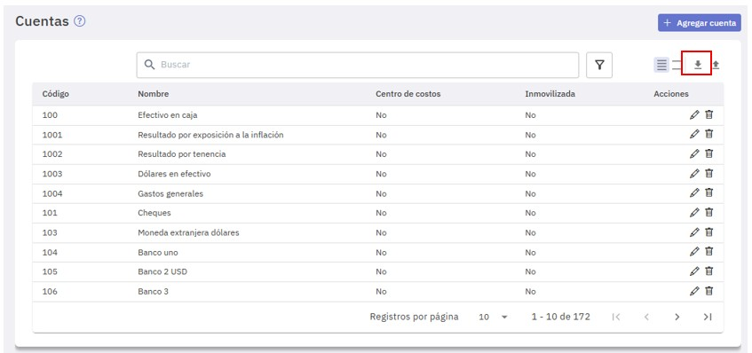
Exportar (Vistas)
Seleccionando esta opción se descarga un archivo "Cuentas.xlsx" con los siguientes datos:
- Id: Código identificación interno de la cuenta
- Código
- Nombre
- Requiere centro de costos
- Requiere índice o cotización
- Tabla índice o cotización
- Atributos
- Código Cuenta Deudora
- Nombre Cuenta Deudora
- Código Cuenta Acreedora
- Nombre Cuenta Acreedora
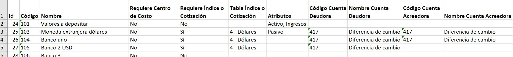
Exportar para editar
Esta opción es útil cuando tenés que efectuar modificaciones masivas a las cuentas.
Mediante la misma exportás las cuentas a una planilla excel (de nombre Cuentas_Editar_AAAA-MM-DD_HHmm.xlsx), efectuás las modificaciones que necesites y luego las importás como te explicamos más adelante.
Al seleccionar la opción se despliega una pantalla destinada a seleccionar los campos a incluir en la planilla. Tildá los que correspondan y presioná "Descargar Excel". Tené en cuenta que las columnas marcadas con un asterisco son obligatorias.
La columna "Id" no puede desmarcarse porque es el dato que identifica a cada una de las cuentas al importarlas.
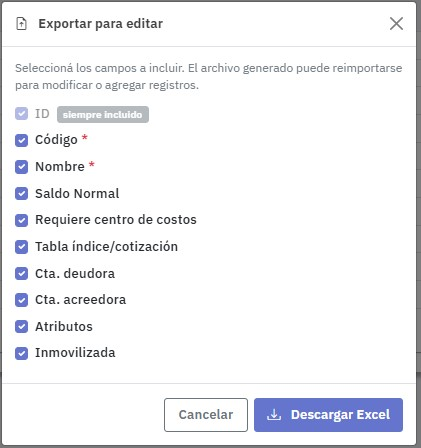
Exportar para otra empresa
Esta opción es de utilidad si tenés que utilizar en una nueva empresa un plan de cuentas que tenés definido en otra ya existente.
La misma genera un archivo excel (de nombre Cuentas_OtraEmpresa_AAAA-MM-DD_HHmm.xlsx) con los datos de todas las cuentas, pero no incluye la columna "Id" para que las mismas sean consideradas como cuentas nuevas en la otra empresa.
Descargar plantilla
Esta opción genera un archivo excel (de nombre Plantilla_Cuentas_AAAA-MM-DD_HHmm.xlsx) incluyendo solamente los encabezados de las columnas correspondientes a los datos necesarios para realizar una importación de cuentas.
Tenés que completar los datos y luego, mediante el botón "Importar a Excel", vas a poder incorporarlas a EasySoft.
Importación de cuentas
La importación de cuentas tiene como objetivo:
- Importar las cuentas definidas en una empresa de EasySoft en una nueva empresa.
- Importar cuentas que han sido exportadas a Excel para modificar de manera masiva y luego volver a ingresarlas.
- Importar cuentas a EasySoft desde otro sistema contable.
Importar las cuentas en una nueva empresa
Para importar las cuentas en una nueva empresa, primero tenés que exportar las cuentas desde la empresa que deseas copiarlas, seleccionando la opción "Exportar para otra empresa". Este proceso genera un archivo ".xlsx" que importarás en la nueva empresa mediante el proceso de importación.
Importar cuentas modificadas en Excel de manera masiva
Para importar cuentas modificadas de manera masiva, primero tenés que exportar las cuentas a modificar seleccionando la opción "Exportar para editar". Realizá las modificaciones necesarias a la planilla y luego procedé a importarlas mediante el proceso de importación. Al modificar los datos tené en cuenta los formatos de los mismos y cuales son obligatorios.
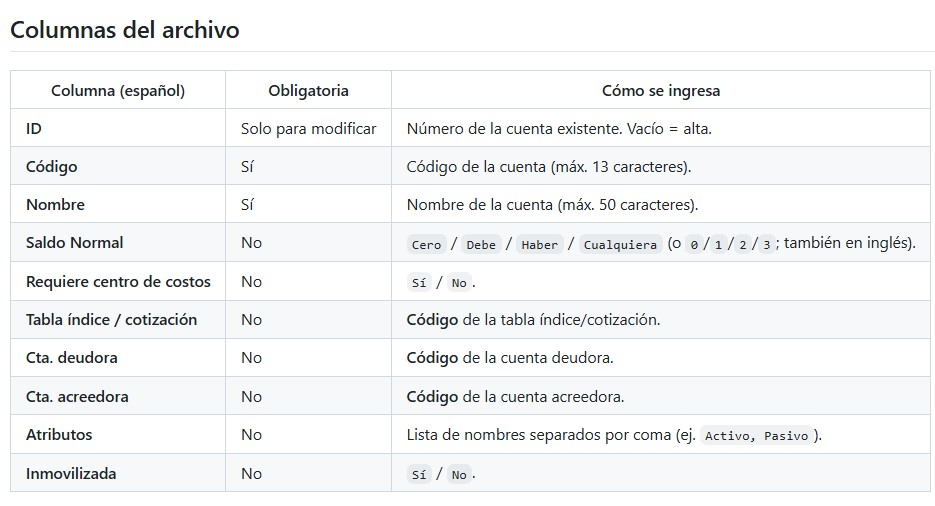
En una modificación sólo se cambian las columnas presentes en el archivo. Si una
columna no está o no tiene dato, no se modifica.
Importar cuentas desde otro sistema contable
Para importar cuentas desde otro sistema contable, tanto en "Exportación de cuentas" como en "Importación de cuentas", tenés una opción para descargar una planilla de Excel con los encabezados de las columnas a completar. Para ello tenés que respetar el formato de los datos e incluir aquellos que son obligatorios.
Una vez completada la planilla ya se está en condiciones de importar las cuentas mediante el proceso de importación.
El siguiente es un ejemplo de como completar la planilla de Excel con algunas de las cuentas a importar del otro sistema contable.
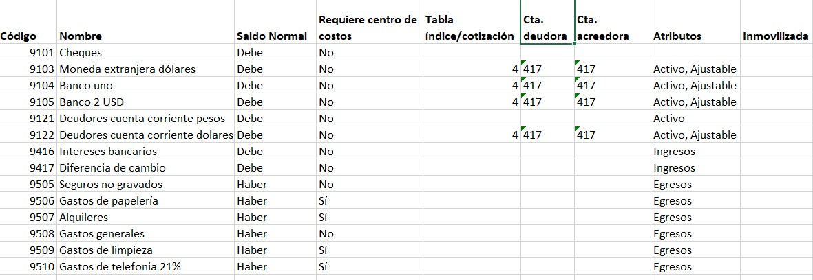
Importación desde Excel
En cualquiera de los tres casos que mencionamos antes, la importación se realiza presionando "Importar desde Excel".
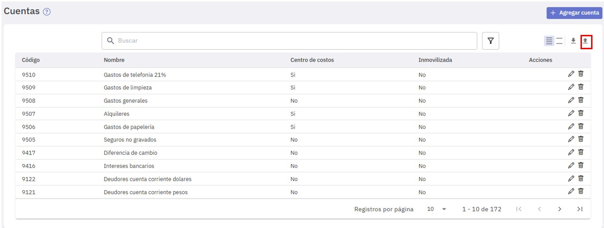
Para comenzar el proceso de importación presioná el botón "+ Seleccionar Archivo" .
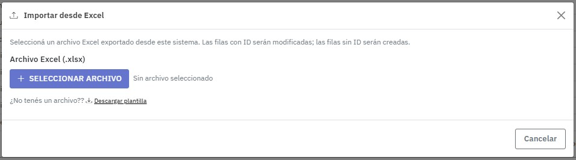
Luego de seleccionar el archivo, EasySoft valida los datos del mismo presionando el botón "Validar".
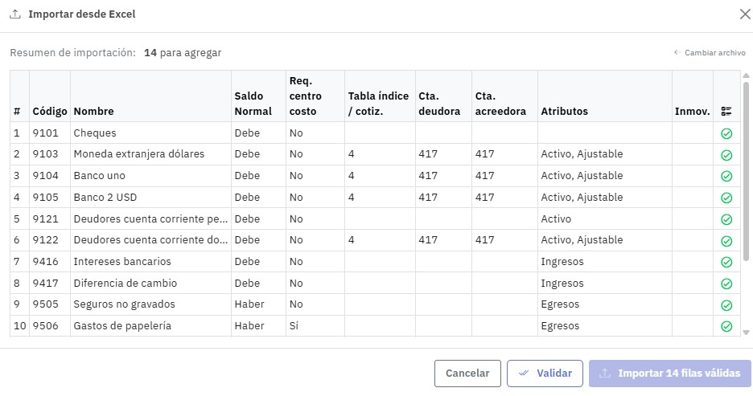
La validación verifica la consistencia de las filas del archivo a importar. Se omiten las filas con errores considerando solamente aquellas que son válidas.
En caso que si bien las cuentas puedan importarse pero no así algunos de sus datos no críticos, en las filas correspondientes se exhibe un ícono de advertencia.
En el caso de este ejemplo, si bien el archivo no presenta errores , algunas filas se validaron pero con advertencias.
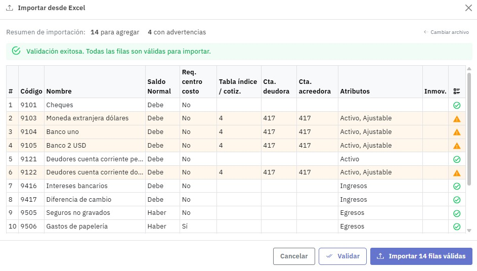
En este ejemplo, se advierte que el atributo "Ajustable" no es reconocido.
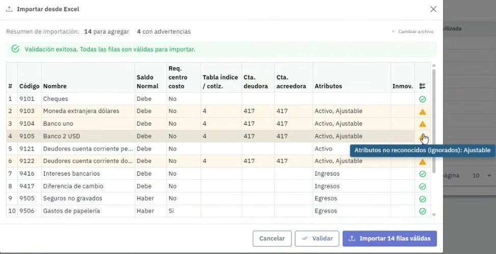
Por último para confirmar la importación presioná el botón "Importar X filas válidas" y se emite un aviso indicando el resultado de la importación.
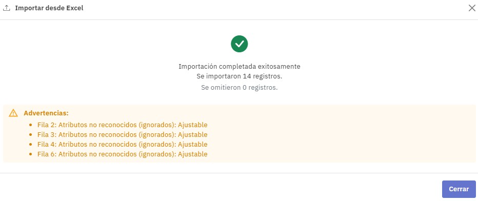
Temas a tener en cuenta
Al realizar la importación pueden presentarte diferentes situaciones que se detallan en el encabezado de la pantalla, al presionar el botón "Validar".
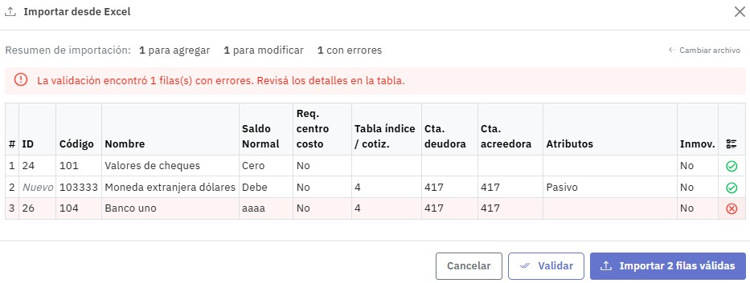
Además, a la derecha de cada fila, se exhibe un ícono que puede ser:
: Válido
: Advertencia (Si te posicionás sobre el ícono te indica el motivo)
: Error (Si te posicionás sobre el ícono te indica el motivo)
El comportamiento de EasySoft cuando un valor no se encuentra o no es válido, según sea la columna, es el que se detalla en el cuadro siguiente.
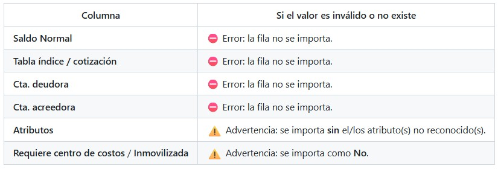
Si tenés un archivo con cuentas a modificar (las cuentas tienen el dato "Id") y querés incluir en el mismo, el alta de una nueva cuenta, podés hacerlo dejando, en la fila donde la definís, el dato "Id" en blanco.
Si una cuenta tiene asociada una tabla de indices o de cotizaciones y tiene movimientos en el año fiscal activo:
- No es posible, en el caso de cotización, modificar la tabla ni las cuentas de ajuste deudora y acreedora.
- No es posible, en el caso de índice, cambiar la tabla a cotización.
- Si tiene asociada una tabla de índice, puede modificarse por otro.
Posibles errores
- No incluir código y nombre de una cuenta al darla de alta.
- Repetir el código de una cuenta dentro del mismo archivo.
- Dar de alta una cuenta con un código ya existente en EasySoft.
- Usar una cuenta como deudora o acreedora si tiene centro de costos, tiene tabla de índices/cotizaciones o si está inmovilizada.
Idioma
Consideraciones a tener en cuenta si el navegador está configurado en inglés.
- Los encabezados se aceptan en español o inglés.
- Los datos "Saldo Normal" y los campos en los que se informa "Sí/No" se aceptan en español, inglés o numérico, según corresponda.
Los nombres de los archivos responden al idioma del navegador según se detalla.
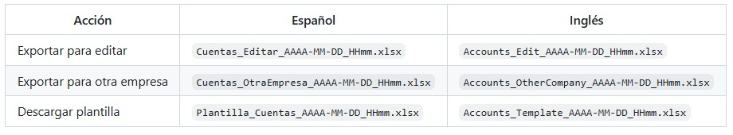